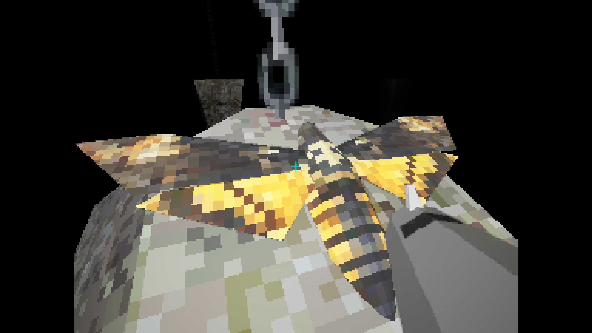
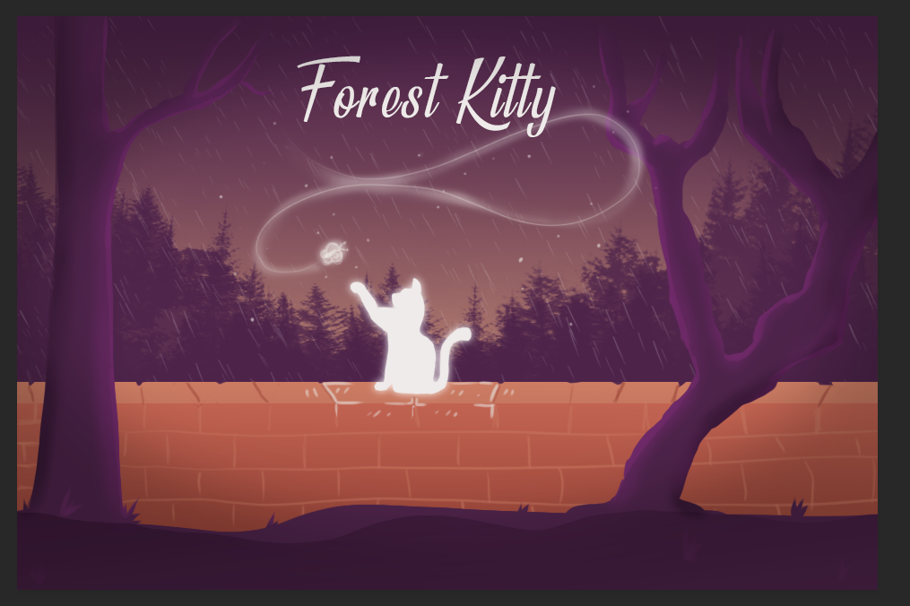
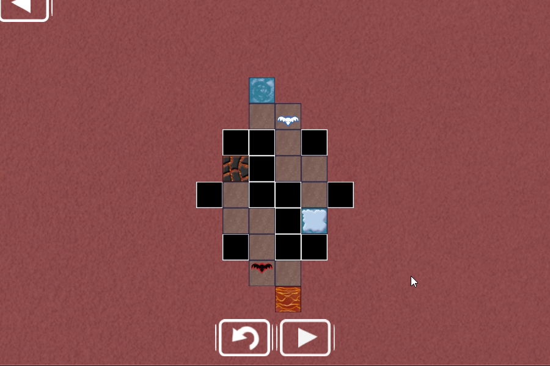
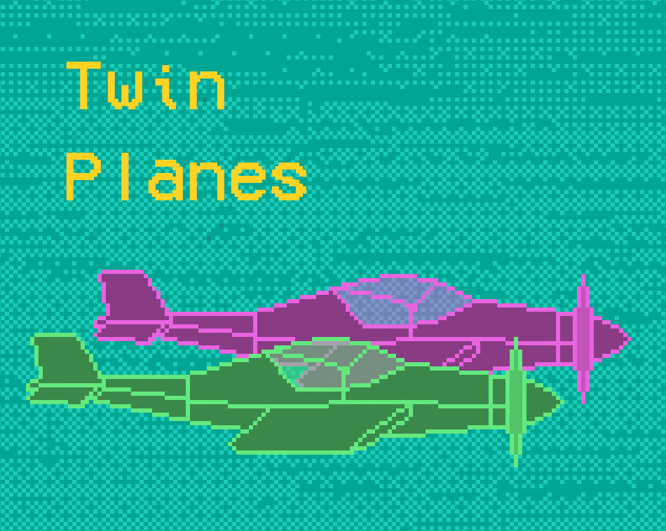
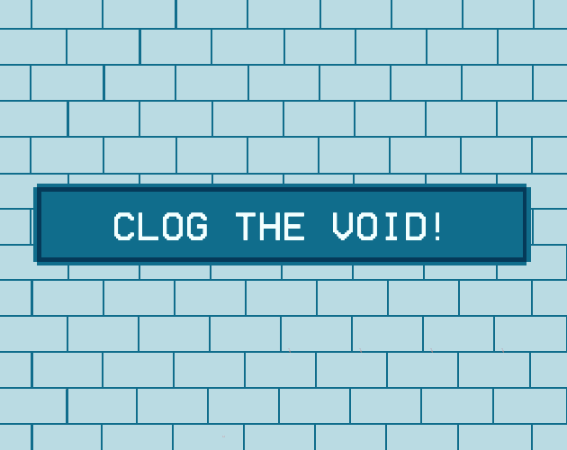
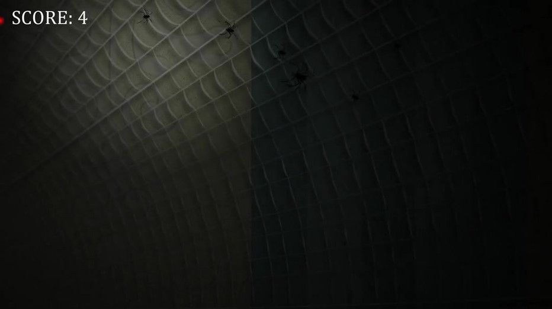
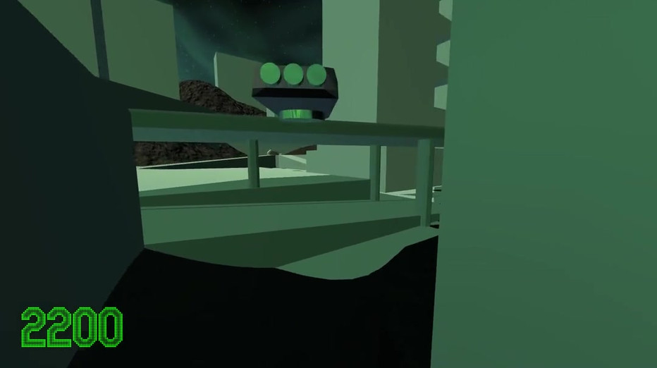
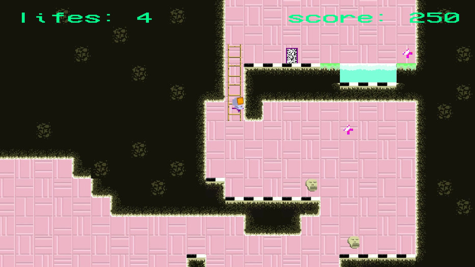
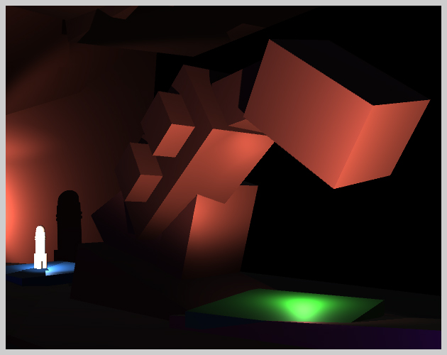

What I'm building right now with a four-person indie team, under the Radium Polonium banner.
I'm the sole programmer on the team — all gameplay systems, tooling, and builds — and I also create most of the 3D models, textures, and sound, and design and set up the levels.
The game's world is adapted from my Master of Architecture thesis project: a real piece of urban design turned into a playable environment.
Production runs on an AI-assisted pipeline I built around Claude Code, Unity MCP, and Blender MCP, with a shared agent memory system synchronized across machines.
Six years at Game Factory (2019–2025), shipping commercial mobile and PC titles and an EU-funded research project.
Contract work for a major European strategy-games group: ported a live 4X title with a large active player base to the client's proprietary Unity ECS framework — debugging and stabilisation.
Feature development on a released GameMaker title.
Physics-based brick-crusher. Implemented gameplay, social, and economy features using MVVM architecture.
Prototype of a mobile 4X strategy game — prototyped core mechanics and optimised frontend–backend communication.
Simulation of vehicle and pedestrian behaviour in urban and rural areas for games and simulators. I designed and implemented the behaviour algorithms in experimental Unity ECS.
Party trivia game. New features, plugin integrations, and fixes driven by live player feedback.
Ported a live mobile poker game to two new platforms and added new features.
Baking-themed collapse game. Social features and seasonal content.
Also at Game Factory: twice supervised internship teams across Unity and Unreal Engine tracks — including guiding two student programmers to ship a complete game in one month.
Game jam entries and personal projects in Unity, Unreal Engine 5, and GameMaker — playable at radium-polonium.itch.io.

Atmospheric grappling-gun adventure: physics-based swinging and climbing in a retro PSX style — solo project, AI-assisted code and graphics. Download on itch.io →

Short, challenging platformer made in a weekend with a five-person jam team. Play in browser →

Path-building puzzle: guide spirits to heaven or hell without letting them collide. Play in browser →

Physics endless runner: bounce a ball ever higher between two planes you control at once. Play in browser →

Physics platformer made in 72 hours — momentum, precision, and no enemies (jam limitation). Play in browser →

Spider survival game — AI behaviours and procedural challenge, with a complete game design document.

Rail shooter set in a futuristic space city — movement, shooting, and scoring mechanics.

Stylized platformer with heavy shader work.

Navigate a spaceship through the caves of the red planet — custom thrust-and-rotation controller. Play in browser →
A generalist profile built for small teams and contract work.
Unity (incl. experimental ECS/DOTS), C#; Unreal Engine 5, C++ & Blueprints; GameMaker. Mechanics prototyping, physics and movement controllers, shaders, pathfinding and collision avoidance, MVVM, design patterns.
Daily production use of Claude and Claude Code with Unity MCP and Blender MCP. Built a cross-machine shared memory system for project agents — a small team working at a bigger team's pace.
Master of Architecture (Architecture & Urban Planning). Real-world spatial and urban design knowledge applied to level design, world building, and simulation — rare among game programmers.
3D modelling and texturing in Blender, sound, level setup. Live ops, platform porting (Steam, Facebook Gameroom), mentoring junior developers.
I spent six years at Game Factory shipping commercial mobile and PC titles — from live ops on games with active player bases, through platform ports, to an EU-funded traffic simulation research project released on the Unity Asset Store.
In 2025 I left to build a commercial title full-time with a four-person indie team, under my Radium Polonium banner. I own all of the programming and much of the art, audio, and level design.
Before games, I earned a Master of Architecture — and I still use it: the world of our current game is my thesis project, rebuilt as a playable environment.